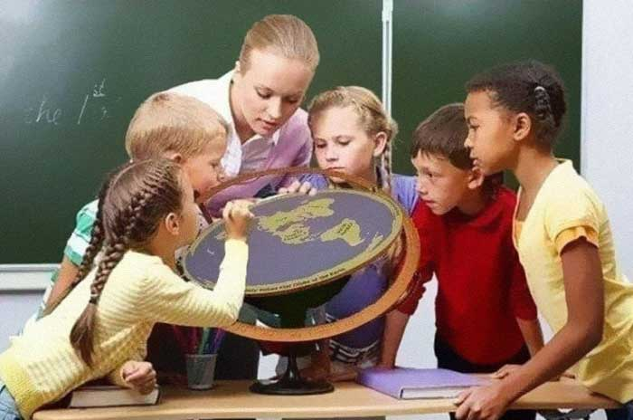
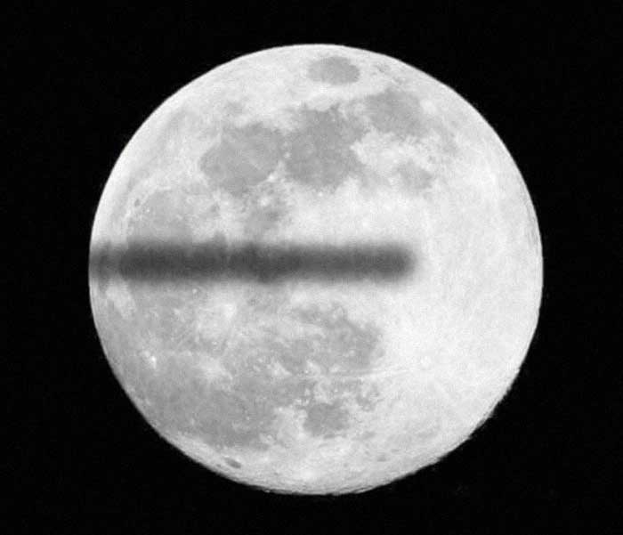
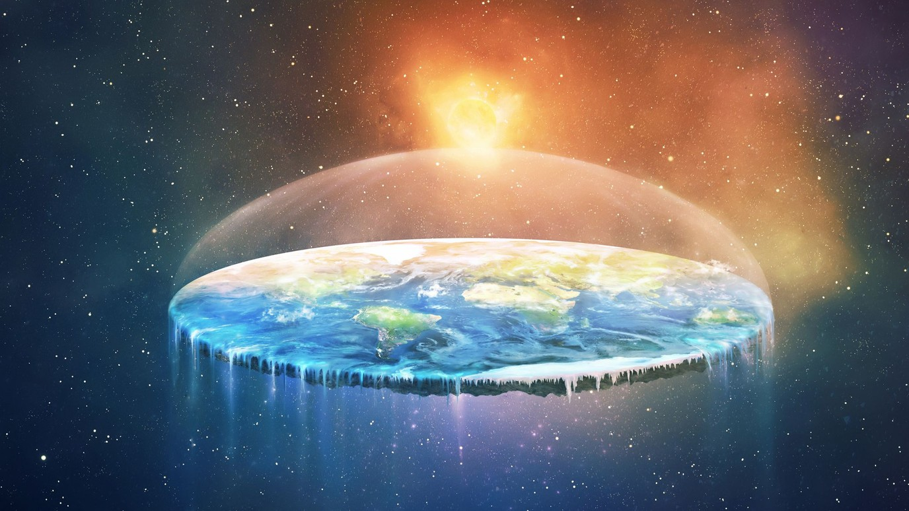

The Flat Earth Association
This website is dedicated to unravelling the true mysteries of the universe and demonstrating that the earth is flat and that Round Earth doctrine is little more than an elaborate hoax created by who wish to put chips in our brains to control us.
 Teacher showing a true earth modelThe Flat Earth Association holds that there is a difference between believing and knowing. If you don't know something, and cannot understand it by first principles, then you shouldn't believe it. We must, at the very least, know exactly how conclusions were made about the world, and the strengths and weaknesses behind those deductions. Our association emphasizes the demonstration and explanation of knowledge.
The site was created to address the many misconceptions a Round Earther may have about the Flat Earth Theory, and to act as an easily-accessible entry point into the mainstream Flat Earth model. It was designed to answer some of the questions that many Round Earthers raise when they first arrive. Please check this page before making your first threads in the forums, as it may contain the answers to the questions on your mind.
Beliefs
The Flat Earth Association is a group actively promoting the Flat Earth Movement worldwide. We continue the age-old tradition of questioning the Round Earth doctrine and challenging authorities. Acknowledging the link between various unconventional beliefs, the Association also occasionally engages in other controversial debates, striving to provide a voice for all free thinker.
 Beautiful eclipse of a flat earthThe most commonly accepted explanation of this is that the space agencies of the world are involved in a conspiracy faking space travel and exploration. This likely began during the Cold War's 'Space Race', in which the USSR and USA were obsessed with beating each other into space to the point that each faked their accomplishments in an attempt to keep pace with the other's supposed achievements. Since the end of the Cold War, however, the conspiracy is most likely motivated by greed rather than political gains, and using only some of their funding to continue to fake space travel saves a lot of money to embezzle for themselves.
In light of the above, please note that we are not suggesting that space agencies are aware that the Earth is flat and actively covering the fact up. They depict the Earth as being round simply because that is what they expect it to be.
Geography
As seen in the diagrams above, the Earth is in the form of a disk with the North Pole in the center and Antarctica as a wall surrounding the known continents. This is the generally accepted model among members of the association. In this model, circumnavigation is performed by moving in a great circle around the North Pole.
 How the earth might appearThe Earth is surrounded on all sides by an ice wall that holds the oceans back. This ice wall is what explorers have named Antarctica. Beyond the ice wall is a topic of great interest to the Flat Earth Association. To our knowledge, no one has been very far past the ice wall and returned to tell of their journey. What we do know is that it encircles most of the earth and serves to hold in our oceans and helps protect us from whatever lies beyond. However due to climate change, some of our oceans escape.
Here is picture of a proposed, but certainly not definitive, Flat Earth. Other maps representing various Flat Earth models can be found on our Flat Earth Maps page.
Reasons Why the Earth is Flat
Taken from: